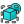

|
| Posizione nel menu |
|---|
| TechDraw → Vista |
| Ambiente |
| TechDraw |
| Avvio veloce |
| na |
| Vedere anche |
Descrizione
Lo strumento Vista aggiunge in una pagina di disegno una rappresentazione di uno o più oggetti. Questo è l'elemento base del modulo TechDraw. La maggior parte delle altre viste sono derivate in qualche modo da Nuova vista.

Uso
- Selezionare uno o più oggetti (Body, App::Part, Part::Feature, Draft object, ... Vedere Note) nella finestra 3D o nella vista a albero.
- Se nel documento ci sono più pagine di disegno, è anche necessario selezionare la pagina desiderata nella struttura.
- Premere il pulsante  Vista
{kind=link}
Opzioni
Nessuna.
Proprietà
- DATAX: La posizione orizzontale della vista nella pagina. (1)
- DATAY: La posizione verticale della vista nella pagina. (1)
- DATALockPosition: Quando è vero, impedisce che le viste vengano trascinate nella Gui. La vista può ancora essere spostata cambiando le proprietà X, Y. (1)
- DATARotation: Rotazione in gradi in senso antiorario della vista sulla pagina. (1)
- DATAScaleType: "Document": usa l'impostazione della scala della Pagina. "Custom": usa una scala unica per questa vista. "Automatic": adatta la vista alla pagina. (1)
- DATAScale: La vista viene resa sulla pagina in Scala: 1 è equivalente alla fonte. (1)
- DATACaption: Breve didascalia di testo opzionale.
- DATASource: Collegamenti agli oggetti disegnabili da rappresentare
- DATADirection: Un vettore che rappresenta la direzione della vista. Direzioni comuni sono Frontale: (0,-1,0), Dall'alto: (0,0,1), Destra: (1,0,0), Assonometria: (1,1,1). (1)
- DATAPerspective: Vero per proiezione prospettica, falso per proiezione ortogonale.
- DATAFocus: Distanza dalla telecamera al piano di proiezione per le proiezioni prospettiche. Deve essere regolata per adattarsi all'oggetto. Se è troppo lontana si perde la prospettiva, se è troppo vicina l'oggetto viene distorto.
- DATACoarseView: Se è vero, TechDraw usa un'approssimazione poligonale per calcolare la geometria del disegno. Se è false, TechDraw usa un algoritmo di precisione. Vedere le note.
- DATASmooth Visible Lines: Mostra o nasconde le Smooth lines.
- DATASeam Visible Lines: Mostra o nasconde le linee di congiunzione.
- DATAIso Visible Lines: Visible Isometric(u,v) lines on/off.
- DATAHard Hidden Lines: Mostra o nasconde le linee degli spigoli nascosti
- DATASmooth Hidden Lines: Mostra o nasconde le linee Smooth lines nascoste.
- DATASeam Hidden Lines: Mostra o nasconde le linee di congiunzione nascoste.
- DATAIso Hidden Lines: Mostra o nasconde le linee Isometriche(u,v).
- DATAIso Count: Numero di linee Isometriche(u,v) da disegnare su ogni faccia.
- VIEWKeep Label: Se è vero mostra sempre Visualizza etichetta.
- VIEWLineWidth: Lo spessore delle linee visibili. Vedere Gruppi di linee.
- VIEWHiddenWidth: Lo spessore delle linee nascoste, se abilitato.
- VIEWIsoWidth: Lo spessore delle linee di superficie isometriche (u, v) e delle linee di quota.
- VIEWExtraWidth: not implemented yet.
- VIEWShowCenters: Mostra o nasconde i segni di centro cerchio o arco
- VIEWCenterScale: Regolazione della dimensione del contrassegno di centro dell'arco, se abilitata.
- VIEWHorizCenterLine: Mostra una linea centrale orizzontale attraverso la vista.
- VIEWVertCenterLine: Mostra una linea centrale verticale attraverso la vista.
- VIEWShowSectionLine: Mostra o nasconde la linea della sezione se applicabile.
(1) queste proprietà sono comuni a tutti i tipi di Viste.
Script
Le Viste possono essere aggiunte alle Pagine utilizzando Python.
view = FreeCAD.ActiveDocument.addObject('TechDraw::DrawViewPart','View')
rc = page.addView(view)
FreeCAD.ActiveDocument.View.Source = [App.ActiveDocument.Box]
FreeCAD.ActiveDocument.View.Direction = (0.0,0.0,1.0)
Note
- Vista disegna tutto quello che ha una proprietà Shape. È possibile selezionare gli oggetti di Draft e anche i Corpi (Body). View estrae anche qualsiasi forma dagli oggetti all'interno di un contenitore App::Part o un gruppo DocumentObject.
- CoarseView può essere molto più veloce per i modelli complessi. La qualità del disegno è ridotta, poiché ogni curva viene approssimata con una serie di brevi segmenti. In CoarseView i vertici non vengono visualizzati poiché ogni breve segmento produrrebbe due nuovi vertici riempiendo il display. Le quote lineari possono essere aggiunte a un CoarseView, ma è improbabile che siano utili.
- Notare che CoarseView è interessato da un bug upstream in OCCT (#3332), e di conseguenza la posizione della vista sulla pagina risulta leggermente traslata rispetto ai valori X, Y specificati.